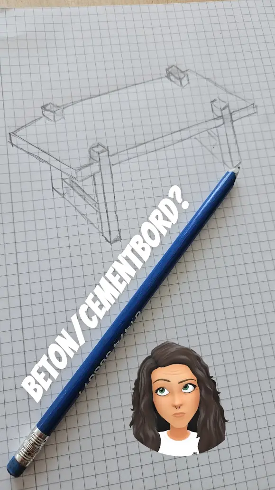
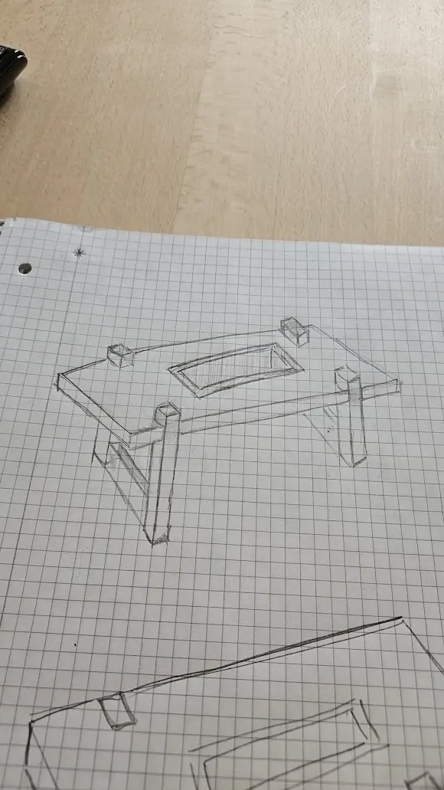
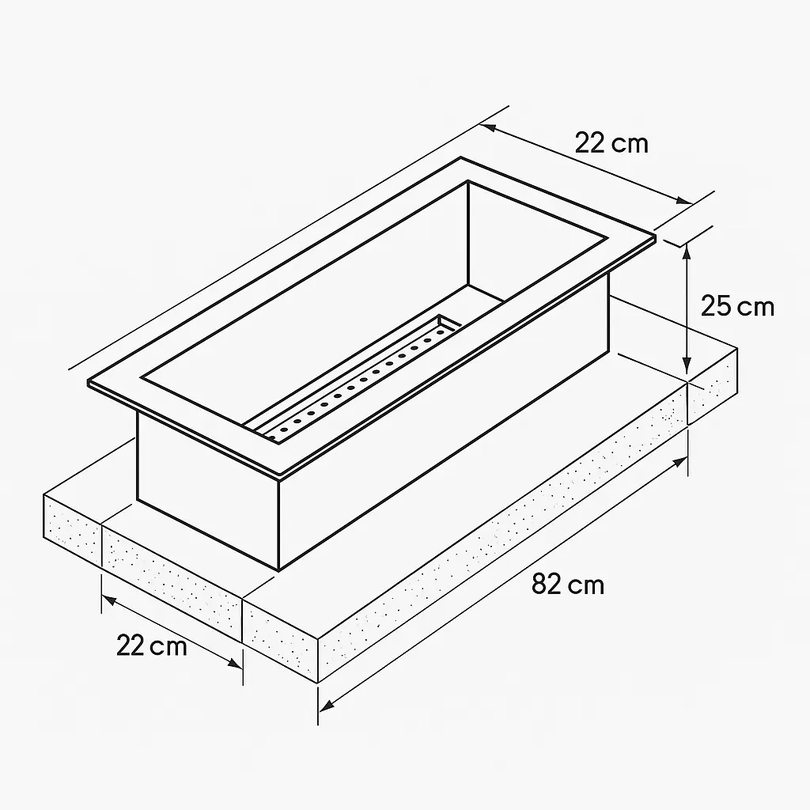
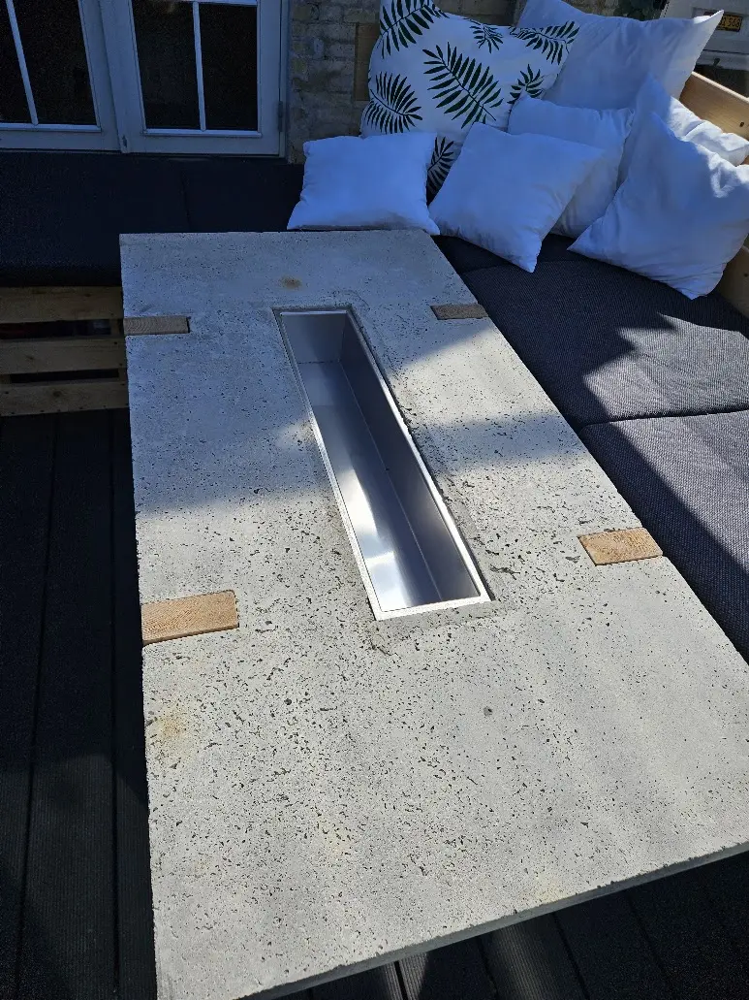
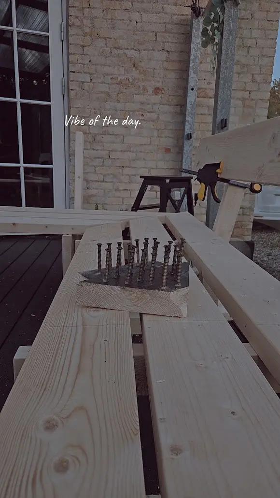
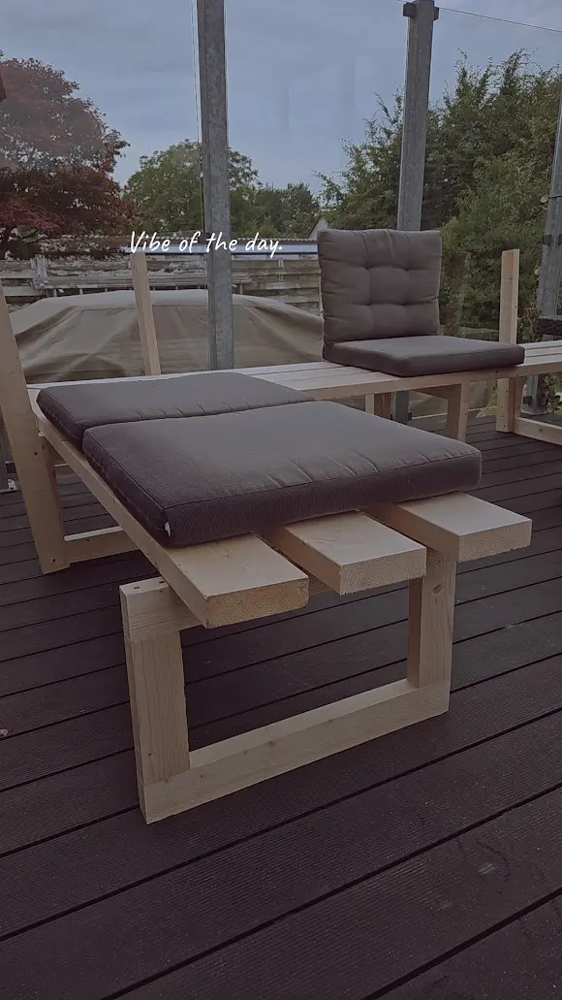
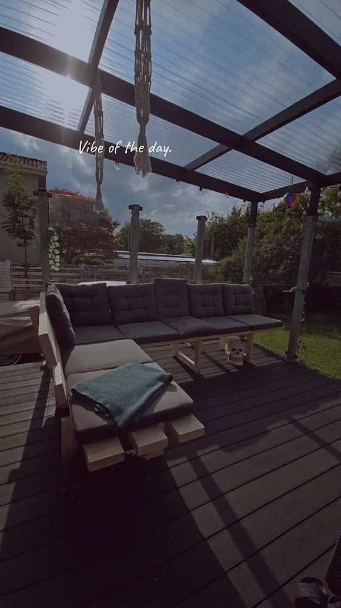

Bygget med hænderne
Vores
projekter.
Fra den første streg på papiret til noget, vi kan bruge og leve med. Her samler vi de større projekter og hele processen undervejs.
Betonbordet
Fra blyantstreg
til færdigt møbel.
Et bord støbt i beton med en integreret stålindsats. Projektet begyndte på ternet papir og endte som et tungt, råt samlingspunkt på terrassen.





Terrasseloungen
Bygget til lange
dage udenfor.
Brædder, en hel del skruer og en idé om at udnytte terrassen bedre. Lidt efter lidt blev træet til en stor lounge med plads til mennesker, puder og pauser.


